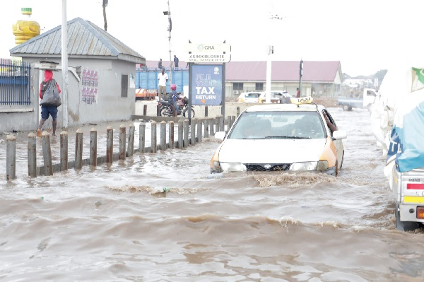

Uncovering the Dynamics of Seasonal Floods in Accra, Ghana
Remote Sensing · Google Earth Engine · Sentinel-1 RADAR
Problem
Accurate and up-to-date information on flood extent is crucial for effective flood management and disaster response in Accra. The lack of detailed and timely data hampers these efforts. There is therefore a need to utilise remote sensing technologies, specifically RADAR data, to address this gap and enhance our understanding of flooding patterns in the city.

Project Objective
The primary objective is to analyse and visualise flooding in Accra using RADAR remote sensing. Specific goals include:
- Generating flood extent maps to visualise and analyse affected areas.
- Quantifying flooded area extents and estimating associated cropland losses.
- Building a web application for interactive exploration of the results.
Relevance
Accurate knowledge of flood extents and their impacts is essential for developing effective flood management strategies. Understanding which areas are at highest risk allows policy makers and urban planners to prioritise resources and implement targeted measures to reduce vulnerability. The accompanying web application makes results accessible to all stakeholders.
Methodology
The study utilised RADAR data from Copernicus Sentinel-1 and leveraged Google Earth Engine (GEE) for efficient processing. The workflow was:
- Data Acquisition: Four Sentinel-1 images were acquired via GEE including a pre-flood reference image (January 05, 2020) and three post-flood images (June 09, 2020; July 05, 2022; October 09, 2022).
- Preprocessing: Speckle filtering was applied to reduce noise and improve data quality.
- Image Differencing: The pre-flood image was subtracted from each post-flood image, highlighting areas that changed due to flooding.
- Thresholding and Classification: A threshold was applied to classify flooded and non-flooded pixels. Slope and land-cover data were incorporated to reduce false positives.
- Extent and Loss Calculation: Inundation extent, flooded cropland, and affected built-up area were all computed from the classified outputs.
Results and Conclusion
Three distinct flooding events were examined:
June 09, 2022
Flood extent: ~594 ha
Flooded cropland: ~129 ha
Widespread impact on both agricultural and urban sectors.
July 05, 2022
Flood extent: ~800 ha
Flooded cropland: ~19 ha
Flooded built-up: ~257 ha
Substantially larger event with significant impact on residential and commercial zones.
October 09, 2022
Flood extent: ~1,266 ha
Flooded cropland: ~21 ha
Flooded built-up: ~247 ha
Largest event — raises serious concerns about urban resilience in Accra.
To enhance accessibility, a web app was developed to visualise the results. It allows users to interact with the maps, explore flood events, and view the distribution of flooded cropland and built-up areas. In conclusion, the analysis provides a foundation for informed decision-making around flood mitigation, disaster preparedness, and sustainable urban development in Accra.